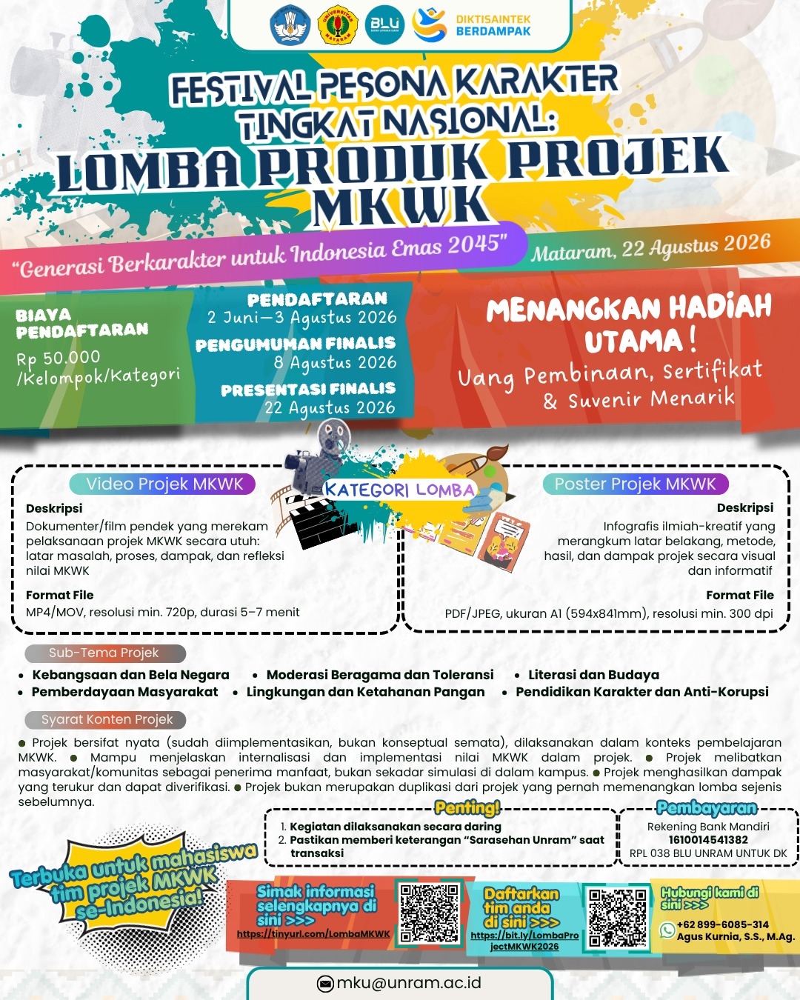

“Generasi Berkarakter untuk Indonesia Emas 2045”
Ajang nasional bagi mahasiswa Perguruan Tinggi Umum se-Indonesia untuk menampilkan project Mata Kuliah Wajib Kurikulum yang benar-benar dijalankan dan berdampak nyata bagi masyarakat. Diselenggarakan Pusat MKWK-MKWU, LPMPP Universitas Mataram — proses lomba sepenuhnya daring, dengan Pengumuman & Awarding secara hybrid di Hotel Lombok Raya.
menuju penutupan pendaftaran — 3 Agustus 2026, 23.59 WITA
Semua pengumpulan dilakukan lewat satu formulir. Tidak ada pengiriman berkas melalui email.
Buat satu folder bernama NamaUniversitas_NamaTim_ProjectMKWK2026 berisi seluruh berkas. Ubah izinnya menjadi “Siapa saja yang memiliki link → Pelihat”, lalu salin tautannya.
Transfer Rp50.000 per kategori ke rekening panitia, beri keterangan “Sarasehan Unram”. Simpan tangkapan layar buktinya untuk diunggah di formulir.
Tempelkan tautan folder Drive, tautan video YouTube (jika ikut kategori Video), dan bukti pembayaran. Konfirmasi dikirim ke email ketua tim.
Dibayar per kelompok untuk setiap kategori yang diikuti.
Tim yang mengikuti dua kategori sekaligus (Video dan Poster) membayar Rp100.000.
Uang pembinaan, sertifikat, dan suvenir menarik untuk Juara I–III serta Juara Harapan I–III, ditambah penghargaan khusus Best Video, Best Poster, dan Best Presenter.
Hadiah dikirim melalui transfer rekening dan sertifikat diterbitkan dalam bentuk digital.
Tim boleh memilih satu kategori atau keduanya. Luaran yang dikumpulkan mengikuti kategori yang dipilih.
Dokumenter atau film pendek yang merekam pelaksanaan project secara utuh: latar masalah, proses, dampak, dan refleksi nilai MKWK.
| Durasi | 5–7 menit |
| Format | MP4 atau MOV |
| Resolusi | Minimal 720p, orientasi lanskap |
| Bahasa | Indonesia; bahasa daerah wajib bersubtitle |
| Pengumpulan | Unggah ke YouTube (Publik/Unlisted), tempel tautannya di formulir |
Infografis ilmiah-kreatif yang merangkum latar belakang, metode, hasil, dan dampak project secara visual dan informatif.
| Ukuran | A1 (594 × 841 mm) |
| Format | PDF dan JPG/PNG |
| Resolusi | Minimal 300 dpi, mode warna RGB |
| Bahasa | Indonesia |
| Pengumpulan | Simpan di folder Drive tim — tidak perlu dicetak |
Daftar berikut bersifat ilustratif, bukan membatasi. Tim boleh mengangkat tema lain sepanjang relevan dengan capaian pembelajaran MKWK.
| Sub-Tema | Cakupan Isu | Nilai MKWK |
|---|---|---|
| Kebangsaan dan Bela Negara | Nasionalisme, bela negara, cinta tanah air | PKn, Pancasila |
| Moderasi Beragama dan Toleransi | Kerukunan umat, dialog antaragama, inklusivitas | Agama |
| Literasi dan Budaya | Literasi bahasa, budaya dan kearifan lokal | Bahasa Indonesia |
| Pemberdayaan Masyarakat | Pengabdian sosial, UMKM, desa, komunitas marginal | Pancasila, PKn |
| Lingkungan dan Ketahanan Pangan | Ekologi, pangan lokal, pertanian, sanitasi | Semua MKWK |
| Pendidikan Karakter dan Anti-Korupsi | Integritas, anti-korupsi, etika publik | Pancasila, Agama |
Seluruh proses lomba dilaksanakan secara daring melalui Zoom Meeting, kecuali Pengumuman Pemenang & Awarding yang berlangsung hybrid — luring di Hotel Lombok Raya (bersamaan Sarasehan Nasional MKWK) dengan live streaming Zoom bagi yang mengikuti daring.
Untuk template, klik tautannya lalu pilih Buat salinan agar Anda memperoleh berkas sendiri yang bisa diedit.
Dokumen resmi lengkap — syarat, spesifikasi karya, rubrik penilaian, dan tata tertib
Unduh langsung untuk dibaca luring atau dibagikan ke tim
Kerangka siap isi — ringkasan, latar belakang, metode, hasil, integrasi MKWK
Ditandatangani Ketua Tim dan Dosen Pendamping di atas meterai
Silakan sebarkan ke grup kelas, prodi, dan media sosial kampus Anda
Satu formulir untuk seluruh proses pendaftaran dan pengumpulan karya

Layanan Senin–Jumat, pukul 08.00–16.00 WITA, di luar hari libur nasional.
Pusat MKWK-MKWU, LPMPP
Universitas Mataram
Jalan Majapahit Nomor 62, Mataram
Nusa Tenggara Barat 83125
{kind=link}